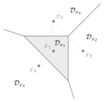

Exercises: 1. Detection
Work out your answer before opening a solution. These 50 self-contained exercises develop the examples, problems and exercises from the lecture notes and seminars.
For additive channels, noise is independent of the input unless stated otherwise. We use ${\rm Re}(X)$ and ${\rm Im}(X)$ for real and imaginary parts, $\ln$ for the natural logarithm, and $\operatorname{erfc}(u)=\frac2{\sqrt\pi}\int_u^\infty e^{-t^2}\,dt$ for the complementary error function. Answers may be left in terms of $\operatorname{erfc}$. Assign probability-zero decision boundaries arbitrarily; for ties with positive probability, follow the rule in the exercise. Symbols in Gaussian and uniform-noise examples represent amplitudes, with $E_{\rm s}=\mathrm E|X|^2$ and SNR equal to energy divided by total noise variance. Exponential-channel inputs represent energies, with the mean-energy convention stated in each exercise.
Exercise 1.1.
A BSC has crossover probability $p=1/10$ and $\Pr(X=0)=4/5$. Find the ML and MAP decisions for both outputs, the two conditional error probabilities and the average error. Also find $\Pr(X=1\mid Y=1)$.
Show solution
The likelihoods favour the received bit, so ML is $g(y)=y$. For MAP, the joint scores for $x=0,1$ are $(18/25,1/50)$ at $y=0$ and $(2/25,9/50)$ at $y=1$. MAP therefore also decides $g(y)=y$ despite the unequal priors.
Both conditional errors are $1/10$, hence $P_{\rm e}=1/10$. Since $\Pr(Y=1)=2/25+9/50=13/50$, Bayes' rule gives $\Pr(X=1\mid Y=1)=9/13$. An output need not identify its input with certainty even when MAP and ML agree.
Exercise 1.2.
A BSC has crossover probability $p=1/10$ and $\Pr(X=0)=19/20$. Find ML and MAP and compare their conditional and average errors. Can the better average detector be worse for one input?
Show solution
ML still uses $g(y)=y$ and has conditional errors $(1/10,1/10)$ and average error $1/10$. At $y=0$, the MAP scores are $171/200$ and $1/200$; at $y=1$, they are $19/200$ and $9/200$. Thus MAP always decides $0$.
Its conditional errors are $P_{\rm e}(0)=0$ and $P_{\rm e}(1)=1$, and $P_{\rm e}=1/20$. MAP halves the average error while making every occurrence of the rare input an error. Minimizing the average does not minimize each conditional error separately.
Exercise 1.3.
A BSC has $p=4/5$ and equiprobable inputs. Compare ML, the detector $g(y)=y$, and the detector $g(y)=0$. Give their conditional and average errors and their decision regions.
Show solution
ML decides $g(y)=1-y$: $\mathcal D_0=\{1\}$ and $\mathcal D_1=\{0\}$. A wrong decision occurs when the channel does not flip, so both conditional errors and the average are $1/5$.
The detector $g(y)=y$ has regions $\{0\}$ and $\{1\}$ and conditional errors $(4/5,4/5)$, hence average $4/5$. The constant detector has $\mathcal D_0=\{0,1\}$, $\mathcal D_1=\varnothing$, conditional errors $(0,1)$ and average $1/2$. A detector may assign an empty region to a symbol.
Exercise 1.4.
A BAC has $W(1\mid0)=1/5$, $W(0\mid1)=2/5$ and $\Pr(X=0)=4/5$. Determine ML and MAP, all conditional errors and the average errors. Find the output distribution.
Show solution
The missing probabilities are $W(0\mid0)=4/5$ and $W(1\mid1)=3/5$. ML decides $g(y)=y$, giving $P_{\rm e}(0)=1/5$, $P_{\rm e}(1)=2/5$ and $P_{\rm e}= (4/5)(1/5)+(1/5)(2/5)=6/25$.
At $y=0$ the MAP scores are $16/25$ and $2/25$; at $y=1$ they are $4/25$ and $3/25$. MAP always decides $0$, with conditional errors $(0,1)$ and average $1/5$. Summing the scores gives $\Pr(Y=0)=18/25$ and $\Pr(Y=1)=7/25$.
Exercise 1.5.
The Z-channel has $W(0\mid0)=1$, $W(0\mid1)=2/5$ and $W(1\mid1)=3/5$. Let $\Pr(X=0)=1/4$. Find the posterior for each output and compare ML and MAP error probabilities.
Show solution
An output $1$ can only come from input $1$: its posterior is one. For output $0$, the joint scores are $1/4$ and $(3/4)(2/5)=3/10$. Their sum is $11/20$, so the posteriors for $0,1$ are $5/11,6/11$.
ML decides the received bit since $1>2/5$ at output $0$. Its conditional errors are $(0,2/5)$ and average error $3/10$. MAP always decides $1$, so its conditional errors are $(1,0)$ and average error $1/4$. The output $0$ is not an unambiguous input $0$.
Exercise 1.6.
A channel with binary input first erases a bit with probability $1/5$. Conditional on no erasure, it flips the bit with probability $1/10$. These probabilities are the same for either input, and $\Pr(X=0)=3/5$. A receiver initially reports each unerased bit and leaves an erasure as $?$; this is a receiver allowed to abstain. Find the probabilities of an incorrect reported bit and of an erasure, and the error probability conditioned on receiving an unerased bit. If every erasure must instead be replaced by a bit, find the MAP replacement and the final conditional and average bit errors.
Show solution
The transition rows, in output order $0,1,?$, are $(18/25,2/25,1/5)$ and $(2/25,18/25,1/5)$. The probability of an incorrect reported bit is $(4/5)(1/10)=2/25$, while the erasure probability is $1/5$. These are disjoint events. Given no erasure, the probability of an incorrect bit is $(2/25)/(4/5)=1/10$.
At an erasure the likelihoods are equal, so MAP replaces it with the more probable bit $0$. At outputs $0,1$, MAP also agrees with the reported bit: its score pairs are $(54/125,4/125)$ and $(6/125,36/125)$. After filling the erasures, $P_{\rm e}(0)=2/25$ and $P_{\rm e}(1)=2/25+1/5=7/25$. The average is $$P_{\rm e}=\frac35\frac2{25}+\frac25\frac7{25}=\frac4{25}.$$ Counting every erasure as a failure before filling would instead give $2/25+1/5=7/25$. An erasure, an incorrect reported bit and an incorrect bit after filling are different events.
Exercise 1.7.
An asymmetric erasure channel has $W(?\mid0)=4/5$, $W(?\mid1)=1/5$, $W(0\mid0)=1/5$ and $W(1\mid1)=4/5$; all other transition probabilities are zero. Let $\Pr(X=0)=3/5$. Find ML, MAP, the posterior at an erasure and the average error.
Show solution
The ordinary outputs identify the input without error. At an erasure, ML prefers $0$ because $4/5>1/5$. MAP also prefers $0$, with joint scores $12/25$ and $2/25$. Thus $\Pr(X=0\mid Y=?)=6/7$, which differs from the prior $3/5$: the erasure itself is informative.
Both detectors have conditional errors $(0,1/5)$ and average error $(2/5)(1/5)=2/25$. The erasure probability is $14/25$; it is not itself the error probability.
Exercise 1.8.
For inputs and outputs ordered as $0,1,2$, the channel matrix (rows are inputs) is $$W=\begin{pmatrix}3/5&3/10&1/10\\1/5&1/2&3/10\\1/10&1/5&7/10\end{pmatrix}.$$ The input probabilities are $(1/10,7/10,1/5)$. Find ML and MAP, their conditional errors, and their average errors. For $y=2$, find the largest posterior.
Show solution
Each column has its largest likelihood on the diagonal, so ML decides $g(y)=y$. Its conditional errors are $(2/5,1/2,3/10)$ and its average is $1/25+7/20+3/50=9/20$.
The joint-score rows are $(.06,.03,.01)$, $(.14,.35,.21)$ and $(.02,.04,.14)$. The middle row is largest in every column, so MAP always chooses $1$. Its conditional errors are $(1,0,1)$ and its average is $3/10$. At $y=2$, the output probability is $.36$, so the largest posterior is $.21/.36=7/12$.
Exercise 1.9.
Equiprobable inputs are $0,1$ and outputs are $0,1,2$. The channel rows are $(1/2,1/5,3/10)$ and $(1/10,3/5,3/10)$. A colleague proposes: decide $0$ only when $y=1$, and decide $1$ otherwise. Compare this rule with ML (break its tie toward $0$) and with nearest-point detection on the numerical input alphabet.
Show solution
The proposed regions are $\mathcal D_0=\{1\}$ and $\mathcal D_1=\{0,2\}$. The conditional errors are $(4/5,3/5)$ and the average is $7/10$.
ML decides $0$ at outputs $0,2$ and $1$ at output $1$. Its errors are $(1/5,2/5)$ and its average is $3/10$. Nearest-point detection decides $0$ at $y=0$ and $1$ at $y=1,2$. Its errors are $(1/2,1/10)$ and its average is also $3/10$: it is the other ML tie-breaking rule. Equal average errors need not mean equal conditional errors.
Exercise 1.10.
Equiprobable symbols $X\in\{-2,2\}$ are sent through $Y=X+Z$, with $Z\sim\mathcal N(0,2)$. Find ML/MAP, the decision regions in $y$, the error regions in $z$, $E_{\rm s}$, SNR and $P_{\rm e}$.
Show solution
Equal priors make MAP and ML coincide. The boundary is $y=0$, with $\mathcal D_{-2}=(-\infty,0)$ and $\mathcal D_2=(0,\infty)$, apart from tie assignment. For $x=-2$, error means $Z>2$; for $x=2$, it means $Z<-2$.
Here $E_{\rm s}=4$ and $\mathrm{SNR}=4/2=2$. Since the standard deviation is $\sqrt2$, each conditional error is $\tfrac12\operatorname{erfc}(1)$. This is also the average error.
Exercise 1.11.
Let $X\in\{0,3\}$ with probabilities $3/4,1/4$, and let the channel be $Y=X+Z$ with $Z\sim\mathcal N(0,1)$. Derive the MAP threshold, write the conditional and average errors using the complementary error function, and find the average symbol energy and SNR. Compare the ML threshold.
Show solution
MAP decides $3$ when $(1/4)e^{-(y-3)^2/2}>(3/4)e^{-y^2/2}$. Taking natural logarithms gives $3y-9/2>\ln3$, hence the threshold is $t=3/2+(\ln3)/3$. It is larger than the ML midpoint $3/2$, expanding the region of the more probable symbol $0$.
The error regions are $Z>t$ for $x=0$ and $Z<t-3$ for $x=3$. Thus $P_{\rm e}(0)=\tfrac12\operatorname{erfc}\!\left(\frac{t}{\sqrt2}\right)$, $P_{\rm e}(3)=\tfrac12\operatorname{erfc}\!\left(\frac{3-t}{\sqrt2}\right)$ and $P_{\rm e}=\tfrac38\operatorname{erfc}\!\left(\frac{t}{\sqrt2}\right)+\tfrac18\operatorname{erfc}\!\left(\frac{3-t}{\sqrt2}\right)$. The average energy is $E_{\rm s}=9/4$, so SNR is $9/4$. ML has error $\tfrac12\operatorname{erfc}\!\left(\frac3{2\sqrt2}\right)$ for either symbol.
Exercise 1.12.
Send $X\in\{-2,0,2\}$ with probabilities $(1/4,1/2,1/4)$ through real AWGN of variance $2$. Use the nearest-point detector. Find every decision region, conditional error, the average error, $E_{\rm s}$ and SNR.
Show solution
The boundaries are $-1,1$. The outer symbols have one error tail each, of probability $\tfrac12\operatorname{erfc}(1/2)$. For $x=0$, the error region in noise coordinates is $(-\infty,-1)\cup(1,\infty)$, so its error is $\operatorname{erfc}(1/2)$.
Averaging gives $P_{\rm e}=\tfrac34\operatorname{erfc}(1/2)$. The energy is $E_{\rm s}=\tfrac14(4)+\tfrac12(0)+\tfrac14(4)=2$, so SNR is $1$. The middle symbol needs two tails even though its transmitted energy is zero.
Exercise 1.13.
Let $X\in\{-2,0,2\}$ have probabilities $(1/4,1/2,1/4)$ and let $Y=X+Z$ with $Z\sim\mathcal N(0,2)$. Use the MAP detector. Derive its decision boundaries and all conditional and average error probabilities. Compare with nearest-point detection: which symbol gains a larger decision region?
Show solution
Compare the scores for $0$ and $2$: $(1/4)e^{-(y-2)^2/4}>(1/2)e^{-y^2/4}$ precisely when $y>1+\ln2$. By symmetry the other boundary is $-b$, where $b=1+\ln2$. On the positive half-line the negative outer symbol cannot beat the positive outer symbol, so these comparisons describe the full MAP rule.
The middle region is $(-b,b)$, wider than its nearest-point region. Its error is $\operatorname{erfc}\!\left(\frac b2\right)$. Both outer errors are $\tfrac12\operatorname{erfc}\!\left(\frac{2-b}{2}\right)$. Therefore $$P_{\rm e}=\tfrac12\operatorname{erfc}\!\left(\frac b2\right)+\tfrac14\operatorname{erfc}\!\left(\frac{2-b}{2}\right).$$ The middle-symbol error decreases and the outer-symbol errors increase. The weighted average cannot exceed the nearest-point value because MAP minimizes it.
Exercise 1.14.
Equiprobable symbols $-3,0,1$ are sent through real AWGN of variance $1$. Find the nearest-point regions and all conditional errors. Compute the average error and SNR.
Show solution
The boundaries are $-3/2$ and $1/2$. Thus the three regions, in order, are $(-\infty,-3/2)$, $(-3/2,1/2)$ and $(1/2,\infty)$. The corresponding conditional errors are $\tfrac12\operatorname{erfc}\!\left(\frac3{2\sqrt2}\right)$, $\tfrac12\operatorname{erfc}\!\left(\frac3{2\sqrt2}\right)+\tfrac12\operatorname{erfc}\!\left(\frac1{2\sqrt2}\right)$ and $\tfrac12\operatorname{erfc}\!\left(\frac1{2\sqrt2}\right)$.
Consequently $P_{\rm e}=\tfrac13\left[\operatorname{erfc}\!\left(\frac3{2\sqrt2}\right)+\operatorname{erfc}\!\left(\frac1{2\sqrt2}\right)\right]$. The energy is $(9+0+1)/3=10/3$, and SNR is $10/3$. The two error tails of the middle symbol have different probabilities: count their distances separately.
Exercise 1.15.
Equiprobable symbols $\{-1,1\}$ are sent with real AWGN of variance $1$. A detector decides $1$ if $y>1$ and $-1$ otherwise. Find its conditional and average errors and compare with ML. Then write the average error for a general threshold $t$.
Show solution
At threshold $1$, an error for $x=-1$ requires $Z>2$, giving $\tfrac12\operatorname{erfc}\!\left(\sqrt2\right)$. For $x=1$, error requires $Z\leq0$, giving $1/2$. Thus $P_{\rm e}=\tfrac14\operatorname{erfc}\!\left(\sqrt2\right)+1/4$, whereas ML uses threshold zero and gives $\tfrac12\operatorname{erfc}\!\left(\frac1{\sqrt2}\right)$.
For a general threshold, $P_{\rm e}(-1)=\tfrac12\operatorname{erfc}\!\left(\frac{t+1}{\sqrt2}\right)$ and $P_{\rm e}(1)=\tfrac12\operatorname{erfc}\!\left(\frac{1-t}{\sqrt2}\right)$, so $P_{\rm e}(t)=\tfrac14\left[\operatorname{erfc}\!\left(\frac{t+1}{\sqrt2}\right)+\operatorname{erfc}\!\left(\frac{1-t}{\sqrt2}\right)\right]$. With equal priors and this symmetric channel, MAP/ML selects $t=0$ and minimizes the average.
Exercise 1.16.
Equiprobable symbols $X\in\{-1,1\}$ are sent through $Y=X+Z$ with $Z\sim\mathcal N(0,1)$. A detector decides $1$ when $|y|<1$ and $-1$ otherwise. Describe its regions and its noise-coordinate error sets. Calculate the conditional and average errors.
Show solution
Now $\mathcal D_1=(-1,1)$, whereas $\mathcal D_{-1}=(-\infty,-1]\cup[1,\infty)$. For $x=1$, the output leaves the window when $Z\leq-2$ or $Z\geq0$, so $P_{\rm e}(1)=\tfrac12\operatorname{erfc}\!\left(\sqrt2\right)+1/2$.
For $x=-1$, error means entering the window: $0<Z<2$. Hence $P_{\rm e}(-1)=1/2-\tfrac12\operatorname{erfc}\!\left(\sqrt2\right)$. The average is exactly $1/2$. The detector does respond to the observation, but its average performance is no better than a constant decision with equiprobable inputs.
Exercise 1.17.
Compare equiprobable constellations $\{-1,1\}$ and $\{1,3\}$ over real AWGN of variance $1$, each with its nearest-point detector. Find the thresholds, error probabilities, energies and SNRs. Does the larger SNR force a smaller error in this comparison?
Show solution
The thresholds are $0$ and $2$. Every symbol is at distance $1$ from its boundary in either constellation, so every conditional error, and each average error, equals $\tfrac12\operatorname{erfc}\!\left(\frac1{\sqrt2}\right)$.
The average energies are $1$ and $(1+9)/2=5$, giving SNRs $1$ and $5$. The second constellation spends energy on a mean offset: its mean is $2$, while both constellations have variance $1$. Under the course definition $E_{\rm s}=\mathrm E|X|^2$, SNR includes that offset energy. Error is unchanged because the observation and its boundary translate together.
Exercise 1.18.
Equiprobable symbols are $X\in\{\pm2\pm j\}$. Circular complex Gaussian noise has total variance $2$. Find the nearest-point regions, average energy, SNR and symbol error. Express the two component error probabilities separately.
Show solution
The boundaries are the real and imaginary axes, so each symbol owns its quadrant. The independent noise components each have variance $1$. The real-component error is $p_R=\tfrac12\operatorname{erfc}\!\left(\sqrt2\right)$ and the imaginary-component error is $p_I=\tfrac12\operatorname{erfc}\!\left(\frac1{\sqrt2}\right)$.
Correct detection requires both decisions to be correct. Thus $P_{\rm e}=1-(1-p_R)(1-p_I)=p_R+p_I-p_Rp_I$, the same for all symbols. Each symbol has energy $4+1=5$, so SNR is $5/2$. The two component errors are not equal because the rectangle has unequal side lengths.
Exercise 1.19.
Write $X=S_R+jS_I$, with independent signs $S_R,S_I\in\{-1,1\}$, $\Pr(S_R=1)=3/4$ and $\Pr(S_I=1)=1/2$. Circular complex Gaussian noise has total variance $2$. Find the MAP regions, average symbol error, energy and SNR. Compare with nearest-point detection.
Show solution
The prior and likelihood both factor by component. Each noise component has variance $1$. The imaginary decision has threshold zero. The real decision chooses $+1$ when $\ln3+2{\rm Re}(y)>0$, so its threshold is $t=-\tfrac12\ln3$.
For $x=s_R+js_I$, its region is the intersection of the appropriate side of the vertical line ${\rm Re}(y)=t$ and the appropriate side of the horizontal line ${\rm Im}(y)=0$. The average real error is $p_R=\tfrac38\operatorname{erfc}\!\left(\frac{1-t}{\sqrt2}\right)+\tfrac18\operatorname{erfc}\!\left(\frac{1+t}{\sqrt2}\right)$; the imaginary error is $p_I=\tfrac12\operatorname{erfc}\!\left(\frac1{\sqrt2}\right)$. Component independence gives $P_{\rm e}=1-(1-p_R)(1-p_I)$. Energy is always $2$, so SNR is $1$. Nearest-point detection uses both thresholds at zero and has $P_{\rm e}=1-[1-\tfrac12\operatorname{erfc}\!\left(\frac1{\sqrt2}\right)]^2$.
Exercise 1.20.
Equiprobable QPSK symbols are $\{\pm1\pm j\}$ and circular Gaussian noise has total variance $2$. A receiver always returns a symbol with imaginary part $+1$: it outputs $1+j$ for ${\rm Re}(y)>0$ and $-1+j$ otherwise. Find all regions and conditional errors, then the average error.
Show solution
The regions of $1+j$ and $-1+j$ are the right and left half-planes. The two lower symbols have empty regions. Whenever a lower symbol was sent, the receiver is certainly wrong, so its conditional error is $1$.
For either upper symbol, only the real sign matters. Its noise variance is $1$, giving conditional error $\tfrac12\operatorname{erfc}\!\left(\frac1{\sqrt2}\right)$. The average is $P_{\rm e}=\tfrac12+\tfrac14\operatorname{erfc}\!\left(\frac1{\sqrt2}\right)$. By comparison, nearest-point QPSK uses both components and has average error $\operatorname{erfc}\!\left(\frac1{\sqrt2}\right)-\tfrac14\operatorname{erfc}^2\!\left(\frac1{\sqrt2}\right)$.
Exercise 1.21.
Equiprobable symbols $X\in\{-2,2\}$ are transmitted through circular complex Gaussian noise of total variance $4$. Find the nearest-point regions and error. Compare with transmitting the same symbols through real Gaussian noise of variance $4$. In both cases, compute SNR.
Show solution
On the complex channel the imaginary axis is the boundary. Only ${\rm Re}(Y)$ matters, and the real noise component has variance $2$. Thus $P_{\rm e}=\tfrac12\operatorname{erfc}(1)$.
On the real channel all the noise variance lies in the decision direction, so $P_{\rm e}=\tfrac12\operatorname{erfc}(1/\sqrt2)$. Both channels have $E_{\rm s}=4$ and SNR $4/4=1$ under the total-variance convention. Their errors differ because only half of the complex noise affects this decision.
Exercise 1.22.
The equiprobable constellation is $\{\sqrt2,j\sqrt2,-\sqrt2,-j\sqrt2\}$ and circular Gaussian noise has total variance $2$. For $x=\sqrt2$, describe its decision region and the correct-decision region in noise coordinates. Compute its conditional error and the average error.
Show solution
The region of the positive real symbol is the wedge ${\rm Re}(y)>|{\rm Im}(y)|$. Writing $y=\sqrt2+z$, correct detection requires ${\rm Re}(z)+{\rm Im}(z)>-\sqrt2$ and ${\rm Re}(z)-{\rm Im}(z)>-\sqrt2$.
Let $U=({\rm Re}(Z)+{\rm Im}(Z))/\sqrt2$ and $V=({\rm Re}(Z)-{\rm Im}(Z))/\sqrt2$. An orthogonal rotation of this circular Gaussian noise gives independent unit-variance Gaussians. The two inequalities become $U>-1$ and $V>-1$, so $P_{\rm c}=[1-\tfrac12\operatorname{erfc}\!\left(\frac1{\sqrt2}\right)]^2$ and $P_{\rm e}=\operatorname{erfc}\!\left(\frac1{\sqrt2}\right)-\tfrac14\operatorname{erfc}^2\!\left(\frac1{\sqrt2}\right)$. Rotation symmetry makes this the average error as well. Energy is $2$ and SNR is $1$; rotating the whole constellation does not change its performance.
Exercise 1.23.
Equiprobable QPSK symbols are $\{\pm1\pm j\}$, but the noise is $N=Z+jZ$ with $Z\sim\mathcal N(0,1)$. Use the nearest-point detector, without assuming it is optimal for this channel. Find the conditional errors for same-sign and opposite-sign symbols, and the average error. Why is the usual QPSK product formula invalid?
Show solution
For $1+j$, correct detection requires only $Z>-1$, because both components cross their boundaries together. For $-1-j$, it requires $Z<1$. Each same-sign symbol therefore has error $\tfrac12\operatorname{erfc}\!\left(\frac1{\sqrt2}\right)$.
For $1-j$ or $-1+j$, correct detection requires $-1<Z<1$, giving error $\operatorname{erfc}\!\left(\frac1{\sqrt2}\right)$. Averaging gives $P_{\rm e}=\tfrac34\operatorname{erfc}\!\left(\frac1{\sqrt2}\right)$. Although $\mathrm E|N|^2=2$, the components are perfectly correlated, not independent: this is not the circular complex AWGN model. Marginal component error probabilities alone do not justify multiplying the probabilities of correct decisions.
Exercise 1.24.
Let $X\in\{0,2\}$ be equiprobable, $Y=X+Z$, and $Z$ exponential with mean $1$. Find ML and nearest-point detection, their conditional and average errors, and the mean input energy. For this energy-input channel use the course ratio $\mathrm E[X]/\mathrm E[Z]$.
Show solution
The support matters: $W(y\mid x)=e^{-(y-x)}$ for $y\geq x$ and zero otherwise. For $0\leq y<2$, only $0$ is possible; for $y\geq2$, the likelihood for $2$ is $e^2$ times that for $0$. ML has threshold $2$, conditional errors $(e^{-2},0)$ and average $\tfrac12e^{-2}$. Outputs below zero are impossible and can be assigned arbitrarily.
Nearest-point detection instead has threshold $1$, so its errors are $(e^{-1},0)$ and its average is $\tfrac12e^{-1}$. Here the inputs are energies, as in the notes: their mean is $(0+2)/2=1$, and the mean-energy ratio is $1$. This convention is distinct from $\mathrm E|X|^2/\sigma^2$ for Gaussian amplitude channels.
Exercise 1.25.
Input energies are $0,2$ with probabilities $4/5,1/5$. The true channel is $Y=X+Z$, with $Z$ exponential of mean $1$. A receiver knows the priors but mistakenly builds its MAP rule using exponential noise of mean $2$. Determine the rule it implements and its actual conditional and average errors under the true channel. Compare with MAP using the correct noise mean.
Show solution
With assumed mean $2$, the likelihood is proportional to $e^{-(y-x)/2}$ on $y\geq x$. For $0\leq y<2$, only input $0$ is feasible. On $y\geq2$, the assumed joint scores share a common factor and reduce to $4/5$ and $e/5$. Since $4>e$, the implemented rule always decides $0$ on reachable outputs. Its actual errors are $(0,1)$ and its average is $1/5$.
With the true mean $1$, the overlap weights are instead $4/5$ and $e^2/5$. Now $e^2>4$, so correct-model MAP chooses $2$ for $y\geq2$. The true conditional errors are $(e^{-2},0)$ and the average is $(4/5)e^{-2}\approx0.1083$. Optimality holds for the channel model used to design the detector; a model mismatch can remove that guarantee. The probabilities of the implemented rule must be evaluated under the true channel, not the assumed one.
Exercise 1.26.
Equiprobable input energies are $0,1,3$, with additive exponential noise of mean $1$. Derive ML, all conditional errors, the average error and the course mean-energy ratio. Explain why the largest input has no error under this rule.
Show solution
Among symbols with $x\leq y$, the likelihood is $e^{-y}e^x$, so ML selects the largest feasible symbol. On the reachable half-line, the regions are $[0,1)$, $[1,3)$ and $[3,\infty)$.
The conditional errors are $e^{-1}$, $e^{-2}$ and $0$. Thus $P_{\rm e}=(e^{-1}+e^{-2})/3$. For the largest input, noise cannot push the output down to a lower region, and there is no higher symbol. Mean input energy is $4/3$ and the mean-energy ratio is $4/3$.
Exercise 1.27.
Use input energies $0,1,3$ and exponential noise of mean $1$, but use probabilities $(3/5,1/10,3/10)$. Determine MAP and identify any symbol that is never selected. Compare its average error with ML and find the mean input energy.
Show solution
For any feasible input the MAP score is $e^{-y}\Pr(x)e^x$. The three constant weights are $3/5$, $e/10$ and $3e^3/10$. Since $e/10<3/5$, symbol $1$ never wins, even when it becomes feasible. Symbol $3$ wins as soon as $y\geq3$.
Therefore MAP chooses $0$ on $[0,3)$ and $3$ on $[3,\infty)$; its errors for inputs $0,1,3$ are $(e^{-3},1,0)$. Its average is $(3/5)e^{-3}+1/10$. ML still uses boundaries $1,3$ and has average $(3/5)e^{-1}+(1/10)e^{-2}$. The mean input energy is $0+1/10+9/10=1$. The lost middle symbol is sufficiently rare that sacrificing it reduces the average error.
Exercise 1.28.
Equiprobable symbols $\{-1,1\}$ are sent through $Y=X+Z$, where $Z$ is uniform on $[-2,2]$. Find the two output supports, the ML ties and the error of nearest-point detection. Compare with an ML rule that always chooses $1$ on the overlap. Find $E_{\rm s}$ and the variance-based SNR.
Show solution
The supports are $[-3,1]$ and $[-1,3]$. On the overlap $[-1,1]$, both densities equal $1/4$, so ML ties on an interval of positive probability. Outside the overlap, the feasible symbol must be chosen.
Nearest-point detection splits at zero. Each error interval has length $1$, so both conditional errors and their average are $1/4$. Choosing $1$ throughout the overlap gives conditional errors $(1/2,0)$ and the same average $1/4$. Unlike isolated Gaussian boundaries, the tie-breaking choice changes conditional errors on a nonzero-probability set. The noise variance is $4/3$, energy is $1$, and $\mathrm{SNR}=3/4$.
Exercise 1.29.
Use symbols $\{-1,1\}$ and noise uniform on $[-2,2]$, but let $\Pr(X=1)=4/5$. Find MAP and its conditional and average errors. Compare with nearest-point detection and compute the posterior inside the overlap.
Show solution
On the overlap $[-1,1]$, equal likelihoods leave the priors unchanged: the posterior of $1$ is $4/5$. MAP chooses $1$ there. On $[-3,-1)$ only $-1$ is possible, and on $(1,3]$ only $1$ is possible. Thus MAP can be represented by threshold $-1$ on the reachable support.
The conditional errors are $P_{\rm e}(-1)=1/2$ and $P_{\rm e}(1)=0$, so the average is $(1/5)(1/2)=1/10$. Nearest-point detection retains conditional errors $(1/4,1/4)$ and average $1/4$. Priors affect the preferred split of an overlap even when the densities are flat.
Exercise 1.30.
Equiprobable symbols $\{-2,0,2\}$ are sent with noise uniform on $[-1/2,1/2]$. Find the possible outputs for each symbol and the nearest-point error probability. Compute energy, noise variance and SNR. Why does this not contradict Gaussian error formulas?
Show solution
The output supports are $[-5/2,-3/2]$, $[-1/2,1/2]$ and $[3/2,5/2]$. They are disjoint and lie entirely inside the nearest-point regions with boundaries $-1,1$. Every conditional error is zero.
Average energy is $(4+0+4)/3=8/3$, while $\operatorname{Var}(Z)=(1/2)^2/3=1/12$. Thus SNR is $32$ and the error is exactly zero. Uniform noise is bounded, whereas nondegenerate Gaussian noise has tails at arbitrarily large distances. A Gaussian formula cannot be transferred to this channel by substituting the same variance.
Exercise 1.31.
Let equiprobable symbols be $0,1$, and let $Z$ be uniform on $[0,2]$. Compare the nearest-point rule applied directly to $Y$ with the rule that first subtracts $\mathrm E[Z]$ and then chooses the nearest input. Is the second rule ML? Find both conditional and average errors.
Show solution
The noise mean is $1$ and its variance is $1/3$. Direct nearest-point detection uses threshold $1/2$. Its conditional errors are $\Pr(Z>1/2)=3/4$ for input $0$ and zero for input $1$, so its average is $3/8$.
Subtracting the noise mean gives threshold $3/2$ in the original output coordinate. Its conditional errors are $\Pr(Z>3/2)=1/4$ and $\Pr(Z<1/2)=1/4$, with average $1/4$. The supports are $[0,2]$ and $[1,3]$: only the overlap $[1,2]$ is tied, and threshold $3/2$ divides that overlap while choosing the unique feasible symbol elsewhere. Hence the corrected rule is ML. Direct nearest-point detection wrongly chooses $1$ even on $(1/2,1)$, where input $1$ is impossible.
Exercise 1.32.
Equiprobable QPSK symbols are $\{\pm1\pm j\}$. The real and imaginary noise components are independent and uniform on $[-2,2]$. Use nearest-point detection. Find the correct-decision region in noise coordinates for $x=1+j$, the symbol error, the total noise variance and SNR.
Show solution
Correct detection of $1+j$ requires ${\rm Re}(Z)>-1$ and ${\rm Im}(Z)>-1$. Within the square noise support $[-2,2]^2$, the correct region is a square of area $3^2=9$, out of total area $16$. Thus $P_{\rm c}=9/16$ and $P_{\rm e}=7/16$, the same for all four symbols.
Equivalently each component error is $1/4$, so $P_{\rm e}=1/4+1/4-1/16=7/16$. The intersection term must not be counted twice. Each component variance is $4/3$, giving total variance $8/3$. With $E_{\rm s}=2$, the variance-based SNR is $3/4$. Independence still permits the product calculation, but the one-dimensional tails are uniform, not Gaussian.
Exercise 1.33.
A binary erasure channel has inputs $0,1$ and outputs $0,1,?$. For $0<\varepsilon<1$, its law is $W(x\mid x)=1-\varepsilon$, $W(?\mid x)=\varepsilon$, and zero otherwise. Let $\Pr(X=0)=q$, with $0<q<1$. Find ML and MAP, explain what happens at an erasure, and derive their average errors, including the equiprobable case.
Show solution
Non-erased outputs identify the input. At an erasure, the two likelihoods are equal, so any decision between $0$ and $1$ is ML. If the ML tie is broken toward $0$, its conditional errors are $(0,\varepsilon)$ and its average is $(1-q)\varepsilon$. If it is broken toward $1$, the corresponding values are $(\varepsilon,0)$ and $q\varepsilon$.
MAP compares $q\varepsilon$ and $(1-q)\varepsilon$ at the erasure, choosing the more probable input. Hence $P_{\rm e,MAP}=\varepsilon\min(q,1-q)$. If $q=1/2$, every tie-breaking rule has average $\varepsilon/2$. If a randomized tie-break decides $0$ with probability $r$, its average is $\varepsilon[q(1-r)+(1-q)r]$.
Exercise 1.34.
Equiprobable 8-PAM symbols are $\{\pm a,\pm3a,\pm5a,\pm7a\}$ with $a>0$. The channel is $Y=X+Z$, $Z\sim\mathcal N(0,\sigma^2)$, with $\sigma^2>0$. Find the nearest-point regions, conditional errors, average error and average energy, then express the average error in terms of $\mathrm{SNR}=E_{\rm s}/\sigma^2$. Extend the result to even $M\geq2$, with levels $\pm a,\pm3a,\ldots,\pm(M-1)a$. Estimate the high-SNR cost in decibels of doubling $M$. You may use $1^2+3^2+\cdots+(M-1)^2=M(M^2-1)/6$.
Show solution
The 8-PAM boundaries are $0,\pm2a,\pm4a,\pm6a$. Each outer point has one boundary at distance $a$, giving error $\tfrac12\operatorname{erfc}\!\left(\frac{a}{\sqrt2\sigma}\right)$; each of the six inner points has two tails, giving $\operatorname{erfc}\!\left(\frac{a}{\sqrt2\sigma}\right)$. Thus $$P_{\rm e}=\frac{2\cdot(1/2)+6}{8}\operatorname{erfc}\!\left(\frac{a}{\sqrt2\sigma}\right)=\frac78\operatorname{erfc}\left(\frac{a}{\sqrt2\sigma}\right).$$ The energy is $E_{\rm s}=2a^2(1+9+25+49)/8=21a^2$, so $P_{\rm e}=\tfrac78\operatorname{erfc}(\sqrt{\mathrm{SNR}/42})$.
For general even $M$, two outer points contribute one tail each and $M-2$ inner points contribute two. Also $E_{\rm s}=(M^2-1)a^2/3$. Therefore $$P_{\rm e}=\frac{M-1}{M}\operatorname{erfc}\left(\sqrt{\frac{3\,\mathrm{SNR}}{2(M^2-1)}}\right).$$ At high SNR, keeping the dominant erfc argument fixed when $M$ doubles requires the SNR factor $(4M^2-1)/(M^2-1)\approx4$, or about $6$ dB per extra bit. This is a high-SNR scaling estimate, not exact equal-error matching: the prefactor also changes. For $2\to4$ levels the argument-preserving factor is $5$ (about $7$ dB), and for $4\to8$ it is $4.2$ (about $6.2$ dB).
Exercise 1.35.
The input energies are $0,2A$, with $A>0$ and probabilities $q,1-q$, where $0<q<1$. Let $Y=X+Z$, with exponential noise of mean $\mu>0$: $f_Z(z)=\mu^{-1}e^{-z/\mu}$ for $z\geq0$ and zero otherwise. Find the MAP rule and its average error as functions of $q$. Treat the equality case at the transition between the two rules.
Show solution
For $0\leq y<2A$, only input $0$ has positive likelihood. On $y\geq2A$, the MAP scores share the positive factor $\mu^{-1}e^{-y/\mu}$, leaving weights $q$ and $(1-q)e^{2A/\mu}$. Write $q_*=e^{2A/\mu}/(1+e^{2A/\mu})$.
For $q<q_*$, MAP uses threshold $2A$. Its conditional errors are $(e^{-2A/\mu},0)$ and its average is $q e^{-2A/\mu}$. For $q>q_*$, MAP always chooses $0$ on reachable outputs, with conditional errors $(0,1)$ and average $1-q$. At equality there is a tie throughout the overlap; every tie-breaking rule has average $q_* e^{-2A/\mu}=1-q_*$. Equivalently, $$P_{\rm e,MAP}=\min\{q e^{-2A/\mu},1-q\}.$$ Outputs below zero are impossible. A sufficiently strong prior outweighs the fixed likelihood ratio on the common support.
Exercise 1.36.
For a nearest-point detector, draw the decision regions of $\{0,2,2j,-1-j\}$ in the complex plane. Write them as inequalities in $y=u+jv$ and identify which parts of the perpendicular bisectors are actual boundaries. Repeat the geometric construction for 8-PSK, $\{e^{j\pi k/4}:k=0,\ldots,7\}$. No noise model is needed to define these nearest-point regions; ties may be assigned to any nearest symbol.
Show solution
Label the four points $x_1=0$, $x_2=2$, $x_3=2j$, $x_4=-1-j$. Comparing squared distances pairwise gives the regions, apart from boundaries: $$\begin{aligned}\mathcal D_{x_1}&=\{u<1,\ v<1,\ u+v>-1\},\\\mathcal D_{x_2}&=\{u>1,\ v<u,\ 3u+v>1\},\\\mathcal D_{x_3}&=\{v>1,\ v>u,\ u+3v>1\},\\\mathcal D_{x_4}&=\{u+v<-1,\ 3u+v<1,\ u+3v<1\}.\end{aligned}$$ The region of zero is the triangle with vertices $(1,1)$, $(1,-2)$ and $(-2,1)$. Its sides lie on $u=1$, $v=1$ and $u+v=-1$. The boundary between $2$ and $2j$ is only the ray $v=u$ above $(1,1)$. The remaining rays follow $3u+v=1$ beyond $(1,-2)$ and $u+3v=1$ beyond $(-2,1)$. The inequalities, or their pairwise intersections, determine these finite sides and rays without extending every bisector into an entire boundary.
For 8-PSK, each point owns a sector centered at its angle $k\pi/4$, bounded by rays at $k\pi/4\pm\pi/8$ (angles understood modulo $2\pi$). The angular width is $\pi/4$. All eight points tie at the origin.

Exercise 1.37.
Equiprobable QPSK symbols are $\{\pm a\pm ja\}$, $a>0$. The noise is circular complex Gaussian with total variance $\sigma^2>0$, and the receiver uses nearest-point detection. Assign two-bit labels so adjacent constellation points differ in one bit. Derive the bit error probability and compare it with equiprobable binary transmission $\{-A,A\}$ over the same complex noise channel at equal energy per information bit. Use $E_{\rm b}=E_{\rm s}/\log_2 M$.
Show solution
One Gray assignment is $a+ja\mapsto00$, $-a+ja\mapsto10$, $-a-ja\mapsto11$ and $a-ja\mapsto01$. Each bit is determined by one coordinate's sign. Each noise component has variance $\sigma^2/2$, so each bit errs with probability $$p=\tfrac12\operatorname{erfc}(a/\sigma).$$ A bit error probability is the average fraction of wrong bits; hence $P_{\rm b}=p$ exactly. The symbol error is $2p-p^2$, since both bits may be wrong together. For QPSK, $E_{\rm s}=2a^2$ and $E_{\rm b}=a^2$, giving $P_{\rm b}=\tfrac12\operatorname{erfc}(\sqrt{E_{\rm b}/\sigma^2})$.
For complex-channel binary signalling, $E_{\rm s}=E_{\rm b}=A^2$ and the imaginary component does not affect the decision. Its bit error is $\tfrac12\operatorname{erfc}(A/\sigma)$, the same expression in terms of $E_{\rm b}$. Thus Gray QPSK and binary signalling have equal bit error at equal energy per bit under this noise convention.
Exercise 1.38.
A message contains $n$ independent, identically distributed symbols sent through a memoryless channel with independent noise across uses. Each symbol is detected using only its own received observation, and each decision has error probability $P_{\rm e}$. Find the probabilities of a completely correct message and of at least one error. Evaluate them for $n=1000$, $P_{\rm e}=10^{-3}$, and compare with the approximation $e^{-nP_{\rm e}}$.
Show solution
The transmitted-symbol/noise pairs are independent across uses, so their individual decision outcomes are independent. All $n$ correct-decision events have probability $1-P_{\rm e}$, hence $$\Pr(\text{all correct})=(1-P_{\rm e})^n,\qquad\Pr(\text{at least one error})=1-(1-P_{\rm e})^n.$$ Numerically, $0.999^{1000}\approx0.367695$ and its complement is about $0.632305$. For small $P_{\rm e}$, using $\ln(1-P_{\rm e})\approx-P_{\rm e}$ gives $\Pr(\text{all correct})\approx e^{-nP_{\rm e}}=e^{-1}\approx0.367879$. The approximation is accurate here, but a $99.9\%$ success rate per symbol still leaves most thousand-symbol messages with at least one error.
Exercise 1.39.
Equiprobable binary inputs have channel rows $(1/2,1/5,3/10)$ and $(1/10,3/5,3/10)$, with outputs ordered as $0,1,2$. A front end replaces $Y$ by a binary value $V$: it reports $V=0$ when $Y\in\{0,1\}$ and $V=1$ when $Y=2$. Find the induced channel from $X$ to $V$, its posteriors and minimum average error. Compare with detecting from the full observation $Y$.
Show solution
Summing the probabilities merged by the front end gives the same induced row for either input: $\Pr(V=0\mid X=x)=7/10$ and $\Pr(V=1\mid X=x)=3/10$. Thus $V$ is independent of $X$, and both posterior input probabilities remain $1/2$ at either output. Every decision rule based only on $V$ has average error $1/2$.
For the unquantized output, ML/MAP decides $0$ at $y=0$, $1$ at $y=1$, and either bit at $y=2$. The total probability of a correct decision is $\tfrac12(\tfrac12+\tfrac35+\tfrac3{10})=7/10$, giving minimum error $3/10$. Merging $0$ and $1$ destroys the likelihood distinction that was useful for detection; merely retaining a binary output does not preserve the relevant information.
Exercise 1.40.
A BAC has $W(1\mid0)=1/5$, $W(0\mid1)=2/5$ and equiprobable inputs. Consider randomized receivers that always choose $1$ at $y=1$, and choose $1$ with probability $s$ at $y=0$, where $0\leq s\leq1$. Find the value of $s$ that equalizes the two conditional errors. Show it minimizes the larger conditional error within this family, and compare its average error with ordinary ML.
Show solution
For input $0$, output $1$ is always an error and output $0$ causes an error with probability $s$: $P_{\rm e}(0)=1/5+(4/5)s$. For input $1$, only output $0$ can cause an error, and then the receiver must choose $0$: $P_{\rm e}(1)=(2/5)(1-s)$.
Equating these gives $s=1/6$ and both errors equal $1/3$. One error increases with $s$ and the other decreases, so their maximum decreases up to the intersection and increases afterwards. This proves optimality for the worst conditional error within the stated family.
ML chooses the received bit and has errors $(1/5,2/5)$, average $3/10$ and worst conditional error $2/5$. The randomized rule improves the worst conditional error to $1/3$ but raises the average to $1/3$. The optimization criterion matters.
Exercise 1.41.
The channel is $Y=X+Z$, where $X\in\{-1,1\}$, $Z\sim\mathcal N(0,1)$ and $\Pr(X=1)=q$ with $0<q<1$. A receiver known to be MAP chooses $1$ precisely when $y>(\ln3)/2$. Determine $q$, then find the two conditional errors and the average error. Derive the relation between an arbitrary MAP threshold $t$ and $q$.
Show solution
The log ratio of the MAP score of $1$ to that of $-1$ is $\ln(q/(1-q))+2y$. Hence the threshold is $t=\tfrac12\ln((1-q)/q)$, which can be inverted to give $$q=\frac1{1+e^{2t}}.$$ For $t=(\ln3)/2$, this gives $q=1/4$. A positive threshold makes the receiver require stronger evidence for the less likely positive symbol.
The conditional errors are $P_{\rm e}(-1)=\tfrac12\operatorname{erfc}\!\left(\frac{t+1}{\sqrt2}\right)$ and $P_{\rm e}(1)=\tfrac12\operatorname{erfc}\!\left(\frac{1-t}{\sqrt2}\right)$. Averaging with the recovered prior gives $P_{\rm e}=\tfrac38\operatorname{erfc}\!\left(\frac{t+1}{\sqrt2}\right)+\tfrac18\operatorname{erfc}\!\left(\frac{1-t}{\sqrt2}\right)$. The threshold identifies the prior only because the input amplitudes, channel variance and MAP assumption have all been specified.
Exercise 1.42.
Let $X\in\{-1,0,1\}$ have probabilities $(19/40,1/20,19/40)$, and let $Y=X+Z$ with $Z\sim\mathcal N(0,1)$. Determine the complete MAP rule and its conditional and average errors. In particular, does the point $y=0$ belong to the MAP region of input $0$?
Show solution
Write $r=(1/20)/(19/40)=2/19$. For the middle symbol to beat $1$, its joint score must satisfy $y<1/2+\ln r$. To beat $-1$, it must satisfy $y>-1/2-\ln r$. Since $1/2+\ln(2/19)<0$, these two requirements cannot hold together. The middle symbol has an empty MAP region.
The two outer symbols have equal priors, so their scores are compared by the sign of $y$. MAP chooses $-1$ below zero and $1$ above zero, with a tie between them at zero. Even at $y=0$, each outer score $(19/40)e^{-1/2}$ exceeds the middle score $1/20$ after cancelling the common Gaussian normalization.
The conditional errors are $\tfrac12\operatorname{erfc}\!\left(\frac1{\sqrt2}\right)$ for each outer symbol and $1$ for the middle symbol. Thus $P_{\rm e}=\tfrac{19}{40}\operatorname{erfc}\!\left(\frac1{\sqrt2}\right)+\tfrac1{20}$. Being a constellation point does not guarantee having a nonempty MAP region when priors are unequal.
Exercise 1.43.
Equiprobable symbols are $\{-1,1\}$ and $Y=X+Z$, where $Z$ has density $f_Z(z)=\tfrac12e^{-|z|}$ on the real line. Find ML, the conditional and average errors, and the noise mean and variance. Compute the variance-based SNR and compare the error with Gaussian noise of the same variance. You may use $\int_0^\infty z^2e^{-z}\,dz=2$.
Show solution
Maximizing the likelihood is equivalent to minimizing $|y-x|$, so ML is nearest-point detection with boundary zero. The error for input $1$ is $\Pr(Z<-1)=\tfrac12\int_1^\infty e^{-z}\,dz=\tfrac12e^{-1}$. Symmetry gives the same conditional error for input $-1$, and therefore the same average.
The mean is zero by symmetry. The second moment is $\int_0^\infty z^2e^{-z}\,dz=2$, so the variance is $2$. With $E_{\rm s}=1$, SNR is $1/2$. Gaussian noise with this variance would give $\tfrac12\operatorname{erfc}\!\left(\frac12\right)\approx0.2398$, whereas the Laplace error here is about $0.1839$. Equal variance does not imply equal tail probabilities at a specified threshold. Laplace noise has heavier far tails than Gaussian noise, but that fact alone does not order errors at every finite threshold.
Exercise 1.44.
Equiprobable symbols $X\in\{-1,1\}$ pass through $Y=-2X+Z$, where $Z\sim\mathcal N(0,1)$. The gain $-2$ is known. Find ML and its error. Compare with a receiver that incorrectly applies nearest-point detection directly to $y$ using the transmitted alphabet $\{-1,1\}$. Compute transmitted symbol energy and received signal-to-noise ratio, defined here as $\mathrm E|{-2X}|^2/\operatorname{Var}(Z)$.
Show solution
The conditional means are $2$ for input $-1$ and $-2$ for input $1$. ML chooses the input whose conditional mean is nearest to $y$, so it decides $1$ for $y<0$ and $-1$ for $y>0$. Its conditional and average errors are $\tfrac12\operatorname{erfc}\!\left(\sqrt2\right)$.
The incorrect receiver chooses $1$ for $y>0$. For either input, it is wrong with probability $1-\tfrac12\operatorname{erfc}\!\left(\sqrt2\right)$, because it reverses the correct assignment of the half-lines. The transmitted energy is $\mathrm E|X|^2=1$, while the received signal energy is $4$, giving the specified received SNR of $4$. Known gain changes the noiseless received constellation; the detector must account for it.
Exercise 1.45.
Equiprobable inputs are $0$ and $2+2j$. In $Y=X+Z_R+jZ_I$, the noises are independent with $Z_R\sim\mathcal N(0,1)$ and $Z_I\sim\mathcal N(0,4)$. Write $y=u+jv$. Derive ML from the Gaussian density, compare its boundary with ordinary Euclidean nearest-point detection, and find both average errors. Compute $E_{\rm s}$ and SNR using total noise variance.
Show solution
After removing the common normalization, the density for $x=x_R+jx_I$ is $\exp[-(u-x_R)^2/2-(v-x_I)^2/8]$. Thus ML compares a weighted squared distance. Expanding the two exponents shows that it selects $2+2j$ when $4u+v>5$.
Under input $0$, the statistic $4Z_R+Z_I$ is Gaussian with variance $16+4=20$, so its error is $\tfrac12\operatorname{erfc}\!\left(\sqrt{\frac58}\right)$. Under input $2+2j$, the statistic has mean $10$, giving the same error across the threshold $5$.
Euclidean nearest-point detection selects $2+2j$ when $u+v>2$. Its noise statistic has variance $5$, and its conditional and average errors are $\tfrac12\operatorname{erfc}\!\left(\sqrt{\frac25}\right)$. This is larger than the ML error because $\sqrt{2/5}<\sqrt{5/8}$ and $\operatorname{erfc}$ is decreasing. The average input energy is $(0+8)/2=4$ and total noise variance is $5$, giving SNR $4/5$. Ordinary Euclidean distance is not ML for this unequal-variance noise model.
Exercise 1.46.
Equiprobable complex inputs are $0$, $2$ and $1+j\sqrt3$. Circular Gaussian noise has total variance $2$. For the nearest-point detector, describe the region of input $0$ in coordinates $y=u+jv$. Express its probability of correct detection as a one-dimensional Gaussian integral, without assuming that the two boundary-crossing events are independent. Find the average error and SNR; the error may be left as an integral. Let $\phi(u)=e^{-u^2/2}/\sqrt{2\pi}$.
Show solution
Comparing the squared distance to $0$ against those to the two other points gives $u<1$ and $u+\sqrt3v<2$. Given $Z_R=u<1$, correct detection also requires $Z_I<(2-u)/\sqrt3$. The independent noise components each have variance $1$, so $$P_{\rm c}(0)=\int_{-\infty}^{1}\phi(u)\left[1-\tfrac12\operatorname{erfc}\!\left(\frac{2-u}{\sqrt6}\right)\right]du.$$ The constellation is an equilateral triangle of side $2$. Rigid motions taking one vertex to another also take its relative decision region to the other one, and the circular noise law is unchanged. Thus all conditional errors coincide and $P_{\rm e}=1-P_{\rm c}(0)$.
The boundary tests involve $Z_R$ and $Z_R+\sqrt3Z_I$, which share $Z_R$ and are not independent; multiplying their marginal success probabilities would be wrong. The average energy is $(0+4+4)/3=8/3$, so SNR is $4/3$.
Exercise 1.47.
Equiprobable 4-PAM amplitudes $-3,-1,1,3$ are sent with real Gaussian noise of variance $1$, using nearest-point detection. Compare the natural binary labels $00,01,10,11$ with the Gray labels $00,01,11,10$, in increasing amplitude order. Derive the exact bit error probability for each labelling using $\operatorname{erfc}$, and compare with half the symbol error probability. Count all possible wrong destinations, not only adjacent ones.
Show solution
The decision boundaries are $-2,0,2$. For the outer input $-3$, the probabilities of deciding $-1,1,3$ are $\tfrac12\operatorname{erfc}\!\left(\frac1{\sqrt2}\right)-\tfrac12\operatorname{erfc}\!\left(\frac3{\sqrt2}\right)$, $\tfrac12\operatorname{erfc}\!\left(\frac3{\sqrt2}\right)-\tfrac12\operatorname{erfc}\!\left(\frac5{\sqrt2}\right)$ and $\tfrac12\operatorname{erfc}\!\left(\frac5{\sqrt2}\right)$. For the inner input $-1$, the probabilities of deciding $-3,1,3$ are $\tfrac12\operatorname{erfc}\!\left(\frac1{\sqrt2}\right)$, $\tfrac12\operatorname{erfc}\!\left(\frac1{\sqrt2}\right)-\tfrac12\operatorname{erfc}\!\left(\frac3{\sqrt2}\right)$ and $\tfrac12\operatorname{erfc}\!\left(\frac3{\sqrt2}\right)$. Reflection gives the other two rows.
With natural labels, the expected numbers of wrong bits for an outer and an inner input are respectively $\tfrac12\operatorname{erfc}\!\left(\frac1{\sqrt2}\right)+\tfrac12\operatorname{erfc}\!\left(\frac5{\sqrt2}\right)$ and $\tfrac32\operatorname{erfc}\!\left(\frac1{\sqrt2}\right)-\tfrac12\operatorname{erfc}\!\left(\frac3{\sqrt2}\right)$. Averaging over the four inputs and dividing by two bits per symbol gives $$P_{\rm b,natural}=\tfrac12\operatorname{erfc}\!\left(\frac1{\sqrt2}\right)-\tfrac18\operatorname{erfc}\!\left(\frac3{\sqrt2}\right)+\tfrac18\operatorname{erfc}\!\left(\frac5{\sqrt2}\right).$$ With Gray labels, the corresponding expected counts are $$\tfrac12\operatorname{erfc}\!\left(\frac1{\sqrt2}\right)+\tfrac12\operatorname{erfc}\!\left(\frac3{\sqrt2}\right)-\tfrac12\operatorname{erfc}\!\left(\frac5{\sqrt2}\right)$$ and $\operatorname{erfc}\!\left(\frac1{\sqrt2}\right)+\tfrac12\operatorname{erfc}\!\left(\frac3{\sqrt2}\right)$, giving $$P_{\rm b,Gray}=\tfrac38\operatorname{erfc}\!\left(\frac1{\sqrt2}\right)+\tfrac14\operatorname{erfc}\!\left(\frac3{\sqrt2}\right)-\tfrac18\operatorname{erfc}\!\left(\frac5{\sqrt2}\right).$$ The symbol error is $P_{\rm e}=\tfrac34\operatorname{erfc}\!\left(\frac1{\sqrt2}\right)$ for either labelling. Numerically the natural and Gray bit errors are about $0.15832$ and $0.11967$, respectively, while $P_{\rm e}/2\approx0.11899$. Gray labelling reduces bit errors here, but does not make $P_{\rm b}=P_{\rm e}/2$ exactly: nonadjacent mistakes can flip two bits.
Exercise 1.48.
Equiprobable symbols $X\in\{-1,1\}$ are sent through $Y=X+Z$, $Z\sim\mathcal N(0,1)$. A receiver reports $-1$ when $y<-1/2$, $1$ when $y>1/2$, and an erasure $?$ otherwise. Find the probabilities of an incorrect reported bit, an erasure and a correct reported bit. Find the error probability conditioned on the receiver reporting a bit. Compare with ordinary nearest-point detection, and also count failures if every erasure is treated as a failure.
Show solution
For input $1$, a wrong reported bit requires $Z<-3/2$, giving $\tfrac12\operatorname{erfc}\!\left(\frac3{2\sqrt2}\right)$. An erasure requires $-3/2\leq Z\leq-1/2$, giving $\tfrac12\operatorname{erfc}\!\left(\frac1{2\sqrt2}\right)-\tfrac12\operatorname{erfc}\!\left(\frac3{2\sqrt2}\right)$. A correct reported bit requires $Z>-1/2$, giving $1-\tfrac12\operatorname{erfc}\!\left(\frac1{2\sqrt2}\right)$. Symmetry gives the same three probabilities for input $-1$, so these are also the unconditional probabilities and they sum to one.
Conditioning on a bit actually being reported gives $$\Pr(\text{wrong}\mid\text{bit reported})=\frac{\tfrac12\operatorname{erfc}\!\left(\frac3{2\sqrt2}\right)}{1-\tfrac12\operatorname{erfc}\!\left(\frac1{2\sqrt2}\right)+\tfrac12\operatorname{erfc}\!\left(\frac3{2\sqrt2}\right)}\approx0.0881.$$ Ordinary nearest-point detection always reports a bit and has error $\tfrac12\operatorname{erfc}\!\left(\frac1{\sqrt2}\right)\approx0.1587$. Abstaining reduces the error among retained decisions, but discards a fraction $\tfrac12\operatorname{erfc}\!\left(\frac1{2\sqrt2}\right)-\tfrac12\operatorname{erfc}\!\left(\frac3{2\sqrt2}\right)\approx0.2417$ of observations. If erasures also count as failures, the total failure probability is $\tfrac12\operatorname{erfc}\!\left(\frac1{2\sqrt2}\right)\approx0.3085$, which is larger than the ordinary error.
Exercise 1.49.
Equiprobable symbols are $\{-a,a\}$, where $a>0$ is a design parameter. The additive noise is uniform on $[-b,b]$ with fixed $b>0$, and the receiver uses nearest-point detection. Derive $P_{\rm e}$ for all $a/b$. Find the smallest symbol energy that ensures $P_{\rm e}\leq1/20$, and the corresponding variance-based SNR. What SNR first permits zero error?
Show solution
The boundary is zero. For either input, the error is one noise tail beyond distance $a$. If $a<b$, that interval has length $b-a$ out of total length $2b$; if $a\geq b$, it has probability zero. Thus $$P_{\rm e}=\max\left\{0,\frac{b-a}{2b}\right\}.$$ The target requires $a/b\geq9/10$. Since symbol energy is $a^2$, its smallest value is $81b^2/100$. The noise variance is $b^2/3$, giving minimum SNR $243/100=2.43$.
Zero error first occurs at $a=b$, hence SNR $3$. At equality the shifted supports touch only at one point of probability zero, so any tie assignment still gives zero error.
Exercise 1.50.
A BAC has $W(1\mid0)=1/10$ and $W(0\mid1)=3/10$. Let $\Pr(X=0)=q$ vary over $0\leq q\leq1$. Find the MAP decisions as functions of $q$ and derive the minimum average error as a piecewise function. Include ties at transition values. Which prior makes this optimized error largest: is it the equiprobable prior?
Show solution
At output $0$, MAP compares $(9/10)q$ with $(3/10)(1-q)$, choosing $0$ when $q>1/4$. At output $1$, it compares $(1/10)q$ with $(7/10)(1-q)$, choosing $0$ when $q>7/8$.
Thus for $q<1/4$ MAP always chooses $1$; for $1/4<q<7/8$ it chooses the received bit; and for $q>7/8$ it always chooses $0$. At $q=1/4$ the output $0$ is tied, and at $q=7/8$ the output $1$ is tied. Either decision on the tied output has the same average error. Consequently $$P_{\rm e,MAP}(q)=\begin{cases}q,&0\leq q\leq1/4,\\3/10-q/5,&1/4\leq q\leq7/8,\\1-q,&7/8\leq q\leq1.\end{cases}$$ The first segment increases; the other two decrease. The largest optimized error is therefore $1/4$, attained at $q=1/4$. At $q=1/2$, the error is only $1/5$. For an asymmetric channel the equiprobable prior need not be the hardest one for an optimal detector.